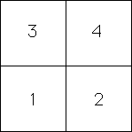
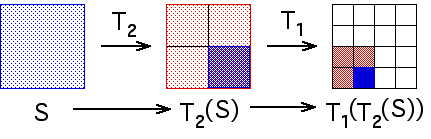
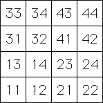

| The notion of address was introduced to explain why the
random IFS algorithm and
the deterministic IFS algorithm
produce the same picture. |
| More details can be found here, but these are the
main points about addresses. We work with a specific example, these transformations |
| T3(x, y) = (x/2, y/2) + (0, 1/2) |
T4(x, y) = (x/2, y/2) + (1/2, 1/2) |
| T1(x, y) = (x/2, y/2) |
T2(x, y) = (x/2, y/2) + (1/2, 0) |
|
| These generate the filled-in unit square S. That is, |
| S = T1(S) U T2(S) U T3(S) U T4(S), |
| with overlaps only along edges. |
| The square S has corners (0,0), (1,0), (0,1), and (1,1), so the square
T1(S) has corners |
| T1(0,1) = (0,1/2) | T1(1,1) = (1/2,1/2) |
| T1(0,0) = (0,0) | T1(1,0) = (1/2,0), |
|
| The address of a region is the transformation or combination of transformations
needed to specify the region. For example, the four quarters of the unit square have these addresses |
|  |
| Because they are specified by one digit, we call these Length 1 Addresses. |
| Longer addresses specify smaller regions, that is, determine the position more precisely. |
| We specify addresses by the order of the composition of transformations. For example, the
square T1(T2S)) has address 12. Here's a way to see this. |
|  |
| Continuing in this fashion, we obtain the Length 2 Addresses, |
|  |
| and so on. |